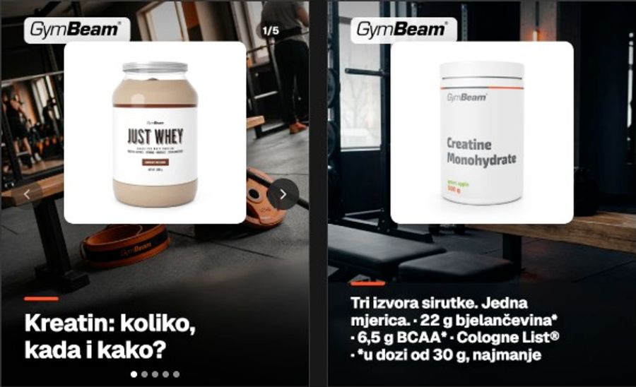
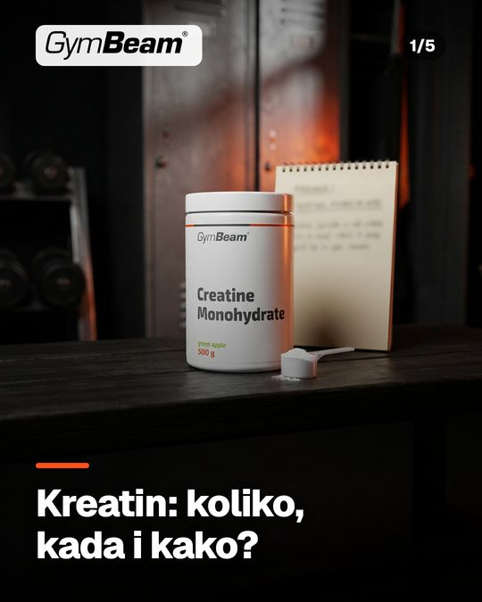
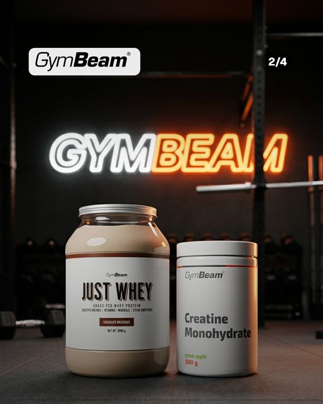

From an Instagram brand to three finished posts · brand: GymBeam Hrvatska (@gymbeamhr) · code: github.com/Aur316/ai-post-recipe
The recipe is a small web app (React, Express, PostgreSQL) that runs eight
phases as background jobs and stops twice for a person to approve. The
three GymBeam posts, every input and every intermediate result are in
examples/gymbeam; the full recipe (commands, models,
settings, inputs, phases, human steps) is in docs/recipe.md.
I chose GymBeam because it is the recommended brand, has an active
Croatian profile and product pages full of verifiable facts.
cp .env.example .env, then set
OPENROUTER_API_KEY (required) and
SERPER_API_KEY (optional web search).
.env.example holds no secrets.
docker compose --profile full up --build and open
http://localhost:8080. From source instead:
pnpm install and pnpm dev (Node.js 24, pnpm,
Docker), then http://localhost:5173.
examples/gymbeam/brief.json, upload the files in
examples/gymbeam/references, press Start.
Settings: each prompt file in packages/prompts/prompts names
its model (Claude Sonnet 5.5 for text and vision, Gemini 3.1 Flash Image
for scenes); MODEL_<PROMPT ID> overrides it, and
MAX_COST_USD_PER_RUN ($3 in .env.example) caps
the spend. One run costs about $0.85 (the GymBeam run from a clean clone:
$0.84).
| Phase | Input → what it does → output |
|---|---|
| 1 Brief | Form and uploads → validates and stores them → brief |
| 2 Research | Brief links and products (+ Serper) → downloads official pages as text, keeps failed ones with the reason → sources |
| 3 Analysis | Sources, profile screenshots, logo, products → tone, audience, themes, colours; each claim verified with a link or assumption → analysis, approval |
| 4 Plan | Approved analysis → three posts with goal, format, concept, rationale, product → plan, approval |
| 5 Copy | Plan and sources → caption, hashtags, slide text from sourced facts only; unsupported numbers are listed → copy |
| 6 Visuals | Copy, colours, product photos, logo → image model makes the scene with the post's products in it, labels copied from their photos; a React template adds the real logo and the text at the bottom, Playwright renders PNGs → slides |
| 7 Review | Slides, copy, sources → vision checks and size rules; a failing slide is made again once → score and issues |
| 8 Export |
Everything → ZIP with slides, captions, meta.json,
sources.md and every phase's JSON
|
Every phase output is saved, so a run resumes after an interruption and any phase can be re-run (later ones become stale).
output, the correction in editedOutput,
and both are exported.
examples/franck.
In the first visuals run (background@v5) the template placed
the product photo on the slide as a white box, so it looked pasted onto
the scene, and posts took the product photos in turn, so the creatine post
showed the protein. I changed the recipe: the post's own product photo
goes to the image model, which places that exact product in the scene with
matching light and shadow (v6). Checking those posts, I found
the next problems: a post about two products got only one photo, so the
model invented the second label; neon signs showed made-up words; and text
on inner slides covered the label. So now every featured product's photo
is sent with its name and the label is copied letter for letter, signs may
only show real words that fit the post, and the text sits at the bottom of
every slide (v7, review@v2). The review score
went from 0.3 to 0.9.



Text and pixels differ every run, and search results may change. The logo, brand colours, tone, product packaging, sourced facts and the goals of the brief must stay the same.
About 10 hours over two days: about 8 hours of active work (design, code, brief and references, approvals, checks) and about 2 hours of waiting for generation (recipe runs and generated code). A full run takes 5–10 minutes of generation.
Data. The corrections at approval (output vs
editedOutput), regenerate instructions and caption edits,
the review issues, and after publishing the posts' saves, comments and
reach from the Instagram Graph API.
What changes. A short per-brand memory built from these: corrections that recur become rules in the analysis and plan prompts ("never mention flavours we have not verified"), approved posts with good results become examples in the prompts, and the plan weighs goals and formats by past results. Repeated review issues become new checks.
How to know it is better. A fixed test set of briefs (GymBeam, Franck and a few more) run with the old and the new version: fewer and smaller human edits, a higher review score, no new factual errors, and a blind side-by-side choice by a person. After publishing, compare saves and comments per post with the brand's earlier posts.
Next fixes. A new scene per inner slide of a story; logo size by aspect ratio; ignore the colours of Instagram's own interface in the analysis.